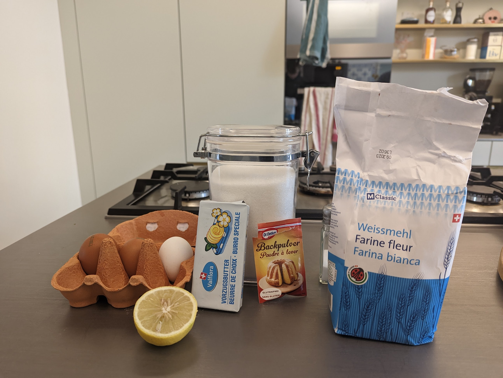
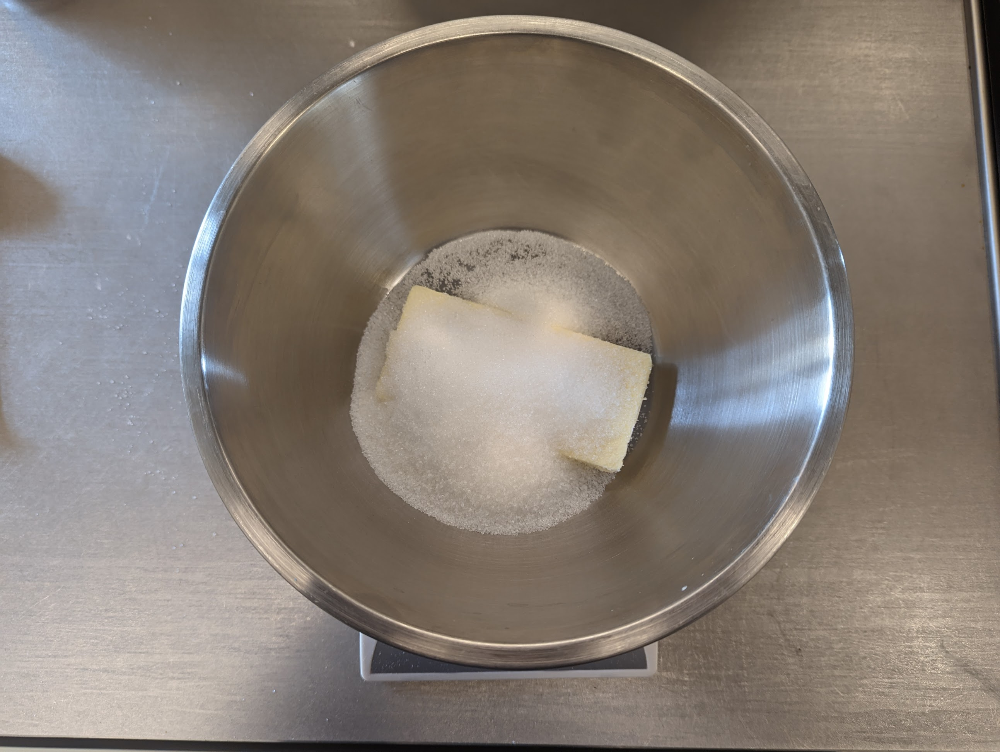
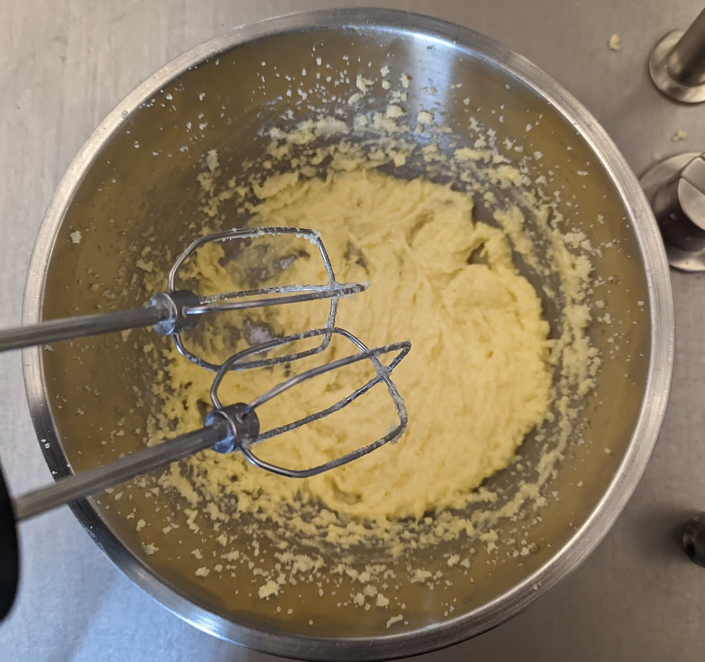
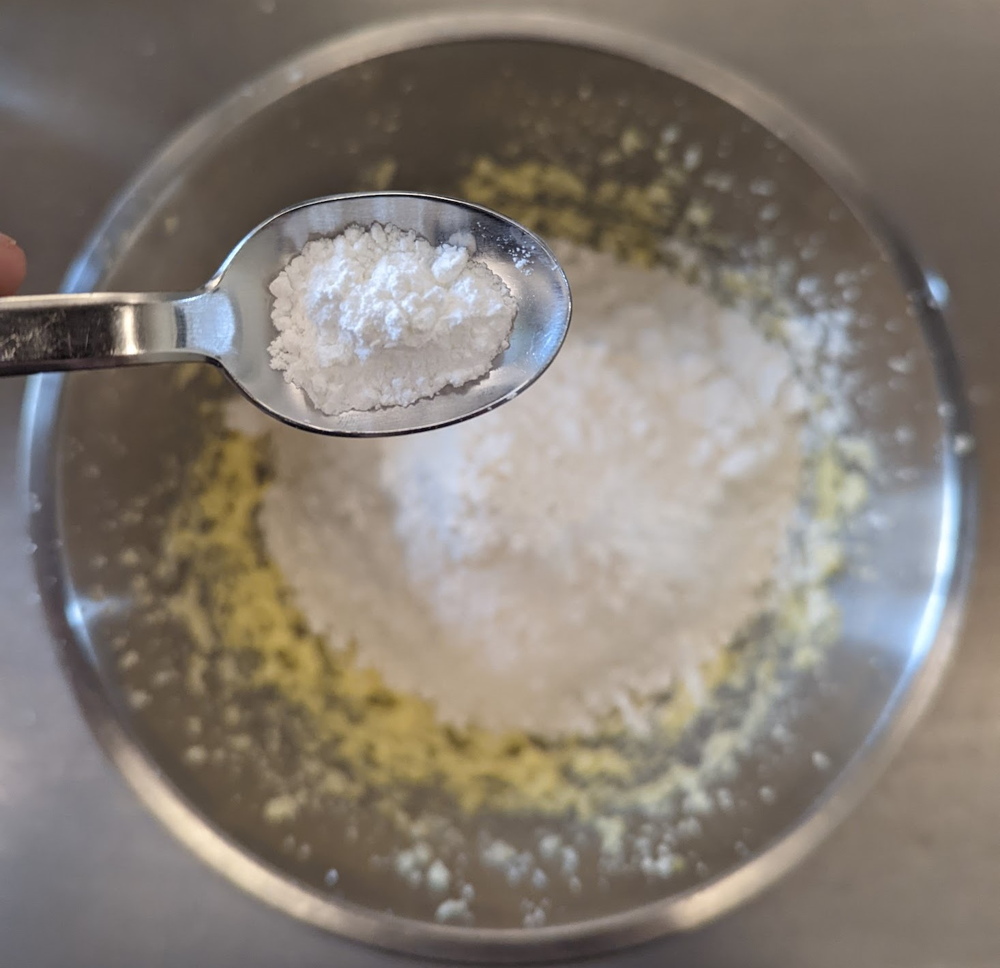
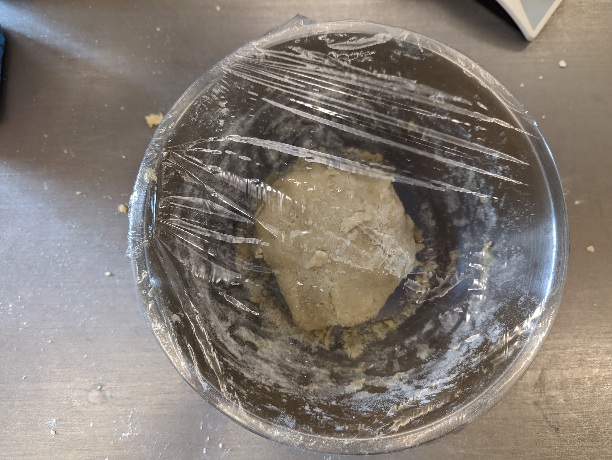
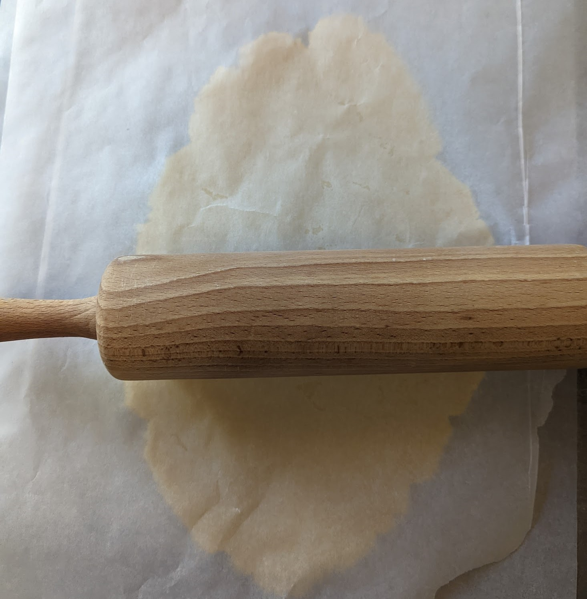
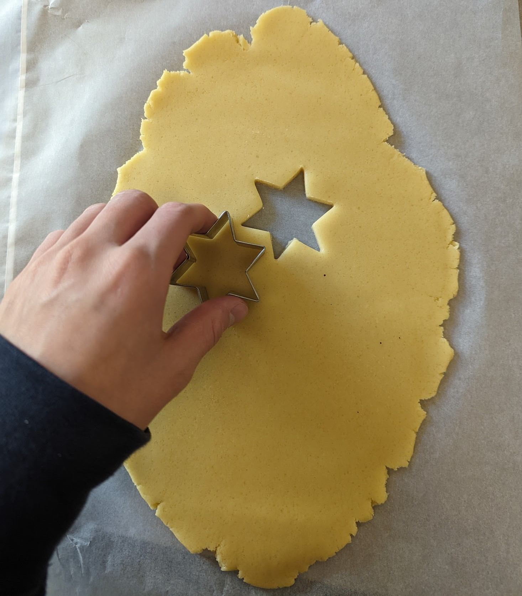
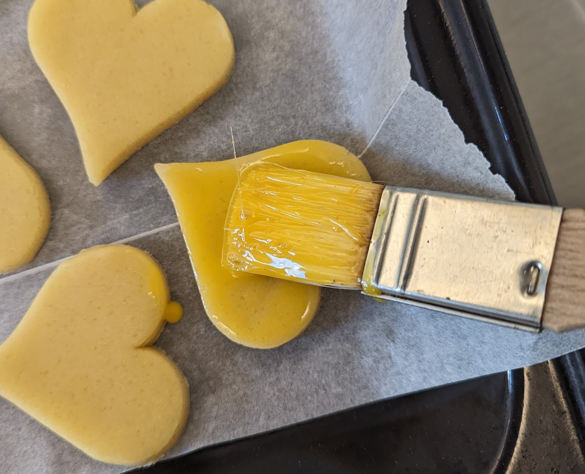
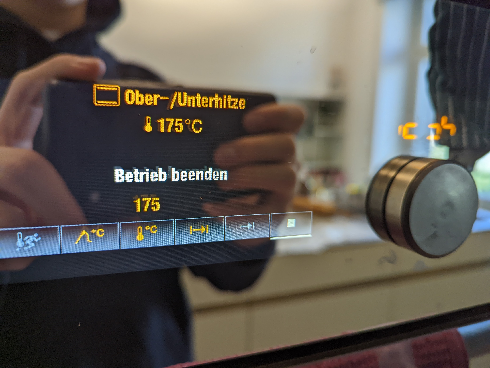
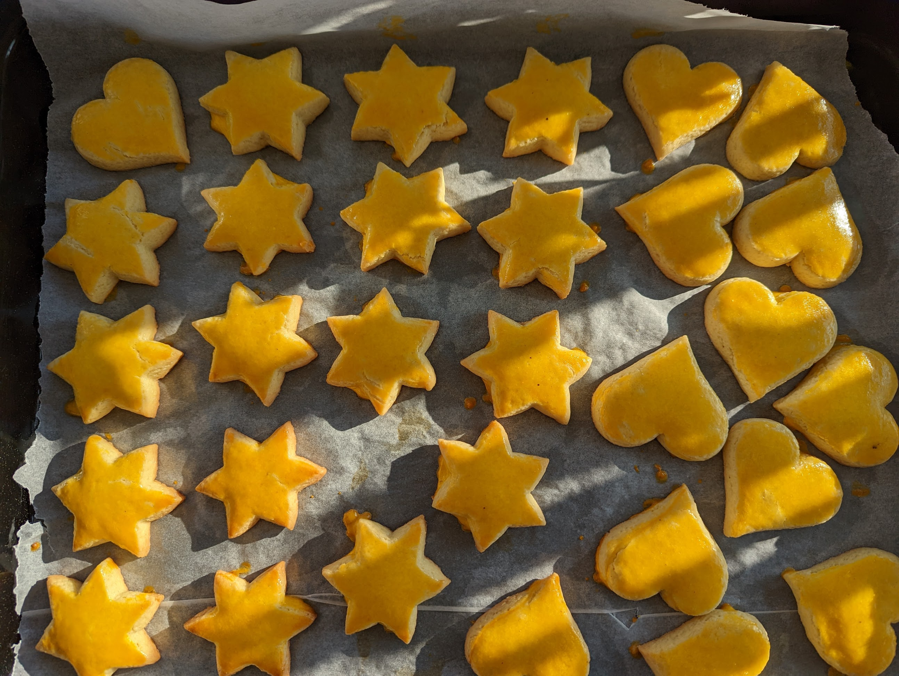

The first thing we need to do is gather all the ingredients we need and measure them correctly. For
this we use the ingredients table above.


First, add warm butter and sugar to a bowl. With a mixer mix the butter and the sugar for about
10 minutes until an airy, light mass is formed.
After that add salt, lemon juice and egg. Continue to mix with the mixer until an even fluffy
mass is formed.


The properly measured flour and baking powder are now also added to the mass. Then try to mix the
mass by hand into a dough without kneading it.
Cover the dough with cling film and refrigerate for 1-2 hours.


After 1-2 hours, take the dough out of the fridge and roll it out between two pieces of baking paper
to a thickness of 7-10 mm. Be careful not to overheat the dough as this will make cutting out more
difficult.
First place parchment paper on the tray. Find the right shapes to cut out of the dough. Then
start cutting out the dough and place the cut out biscuits on the tray. Also, make sure that you cut
them out as efficiently as possible. If you can't cut out another one, form the dough back into a
ball and roll it out again. Repeat this process until there is no more dough left. When done,
refrigerate the tray for about 30 minutes.


After 30 minutes, mix the egg yolk with the water and brush the biscuits with it 2-3 times. The
cookies should turn a nice yellow.
Heat the oven to 175 °C with bottom/top heat. When the oven has reached 175°C, bake the cookies on
the middle of the oven for 12-15 minutes.


After 12-15 minutes the biscuits should look like this and now only the taste test is left.